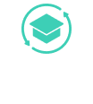
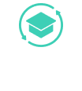

In meinen Projekten habe ich mit verschiedenen Frontend-Technologien gearbeitet und immer wieder neue
Konzepte kennengelernt. Da sich die Webentwicklung ständig weiterentwickelt, bleibe ich neugierig und
offen für neue Tools und Methoden.
Ihnen fehlt
eine Fähigkeit?
Lassen Sie es mich wissen! Ich bin immer offen dafür, Neues zu lernen und meinen Horizont zu erweitern.
Let's Talk


 



 
